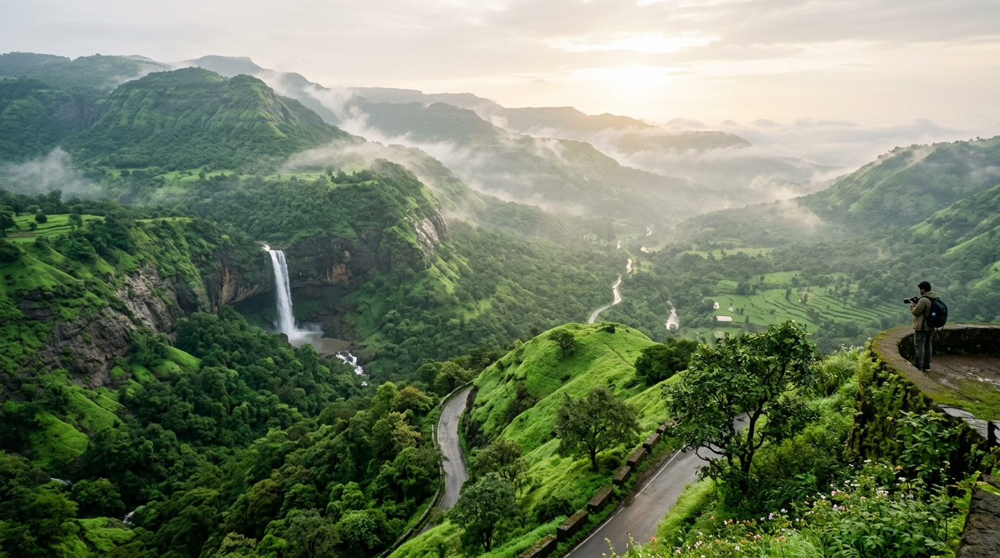
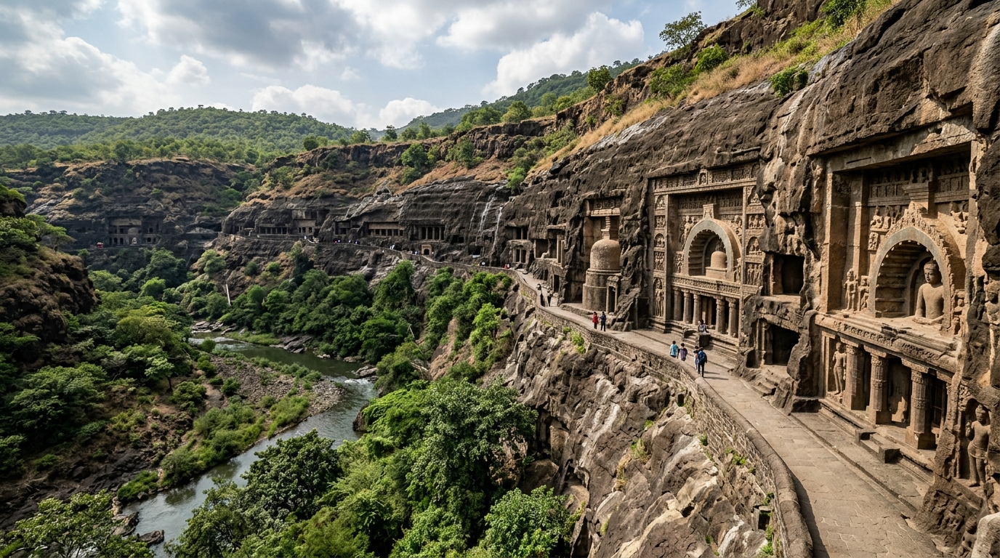

Explore majestic Sahyadri hill citadels, vibrant cultural heritage, ancient cave architecture, and pristine Konkan coastlines in a single connected platform.


Current tourism ecosystems often separate destination information, event updates, stakeholder coordination, and visitor analytics across disconnected platforms.
YatraSetu bridges this gap by serving as a centralized cloud-based platform that brings together all four key pillars of destination management into a single, cohesive digital experience.
Discover destinations, attractions, and cultural events; build trip plans and share feedback.
Manage listings, track visitor statistics, review feedback, and access decision-support analytics.
Share facility updates, local services, and coordinate directly with destination authorities.
Oversee user authentication, platform content, system security, and role permissions.
YatraSetu combines essential tourist-facing tools with powerful managerial and analytical capabilities.
Centralized repository for managers to create, update, and showcase destination profiles, historical context, and points of interest.
Keep tourists updated with real-time cultural festival schedules, local fairs, guided heritage walks, and seasonal events.
Empowers tourists to build customized, simple itinerary schedules combining destinations, attractions, and event dates.
Structured feedback loop allowing tourists to submit ratings and comments, providing valuable insights for managers.
Facilitates information exchange between local business stakeholders (hospitality, guides, transport) and destination managers.
Provides destination managers with data-backed insights into visitor activity, ratings, popular spots, and management reports.
Preview popular cultural, heritage, and nature destinations managed within the YatraSetu platform.
Ancient spiritual realm featuring live Ganga Aarti event schedules, ghat walks, and temple circuits.
Himalayan valley offering adventure sports, Solang excursions, and eco-tourism management guidelines.
Pristine beaches, historic Portuguese architecture, and synchronized local water sports stakeholders.
Surreal stone architecture of Vijayanagara Empire ruins with verified guide and monument schedules.
Mist-covered Western Ghats tea gardens, rare Neelakurinji trail maps, and eco-conservation tracking.
Royal Amer Fort, Hawa Mahal, handicraft bazaars, and city heritage stakeholder coordination.
Streamlined workflow tailored for each user role in the Smart Destination Management Ecosystem.
Discover verified heritage, cultural, and nature destinations with real-time attraction information and event schedules.
Select attractions, upcoming tourism events, and local services to build a personalized, interactive trip plan.
Visit destinations with confidence and submit authentic feedback to help improve tourism management.
Join YatraSetu today to explore destinations, manage tourism resources, share facility updates, and support sustainable tourism decision-making.